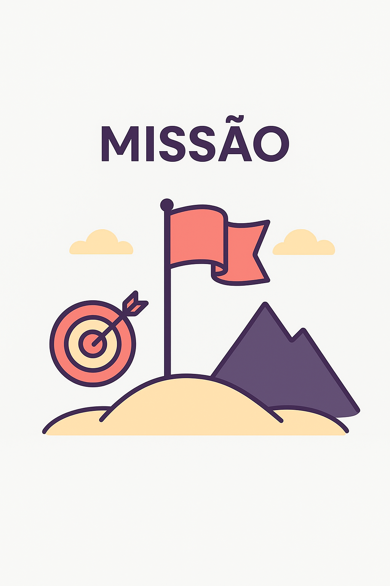

Sobre o Caminho30
O Caminho30 é um espaço dedicado à sua transformação pessoal, criado sem fins lucrativos e com um único propósito: ajudar você a se tornar a melhor versão de si mesmo.
Nosso enfoque é em três pilares da vida: espiritual, mental e físico. Aqui, você encontrará ensinamentos, práticas e recomendações para fortalecer cada um desses aspectos, construindo hábitos saudáveis e duradouros.
O que você encontrará:
- Ensaios e práticas espirituais para se conectar consigo mesmo;
- Exercícios mentais e atividades para aumentar o foco, a criatividade e o bem-estar;
- Recomendações físicas que incentivam o cuidado com o corpo e a saúde.

Nossa Missão
Sua missão no Caminho30 é embarcar em uma jornada de 30 dias de autodesenvolvimento. Cada dia será uma oportunidade de sair da sua zona de conforto, aprender algo novo e criar hábitos que transformam sua vida.
Foco nos 3 Pilares:
- → Espiritual: práticas de reflexão, meditação e conexão consigo mesmo.
- → Mental: exercícios, leituras e vídeos que estimulam a mente e a motivação.
- → Diário: Onde você pode escrever seus desabafos e vitórias.
O Caminho30 não é apenas um desafio, mas uma oportunidade de transformação contínua.